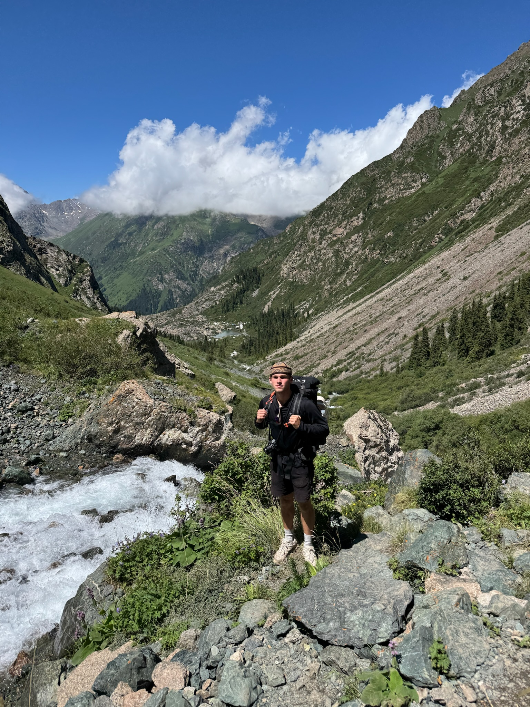
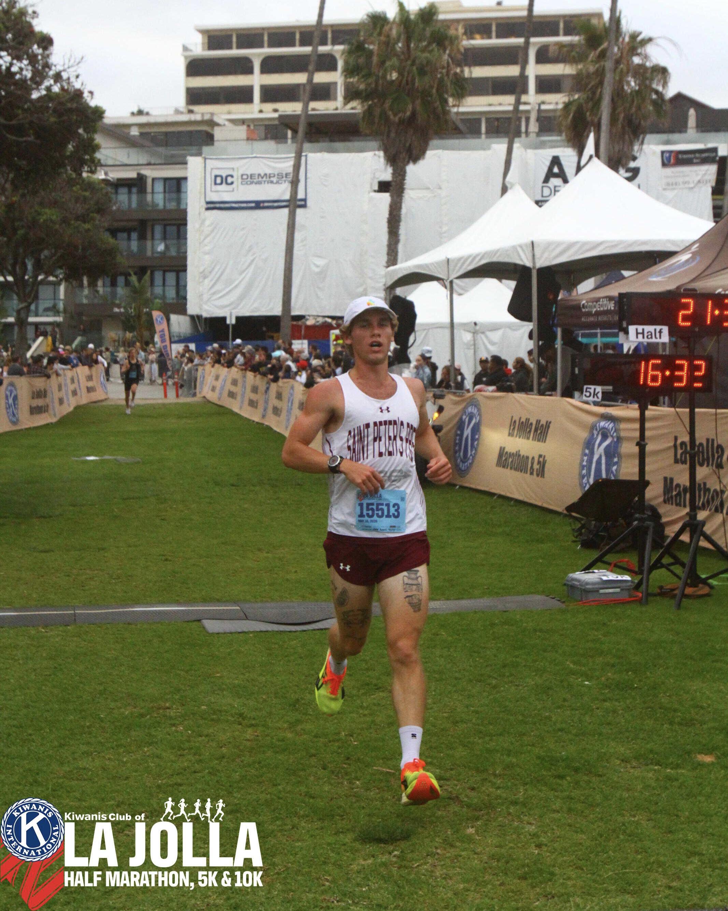

UPDATES & MILESTONES
A timeline of recent professional developments, academic progress, and athletic achievements.
Ak Suu Traverse, Kyrgyzstan
July 2026
Backpacked through the Tian Shan Mountains of eastern Kyrgyzstan for 7 days on the Ak Suu Traverse.

Hiking on the Ak Suu Traverse
Drexel University Graduation
June 2026
Graduated from Drexel University with Bachelor's of Science in Architectural Engineering

Drexel Graduation
La Jolla 5k
May 2026
Placed 8th overall in La Jolla San Diego's 5k race with a time of 16:30.

La Jolla 5k Finish
Broad Street Run 2026
May 2026
Completed the Broad Street Run for the third straight year and finished with a personal record of 58:20.

Broad Street Run
Jersey City Half Marathon 2026
April 2026
Achieved a personal record half marathon time of 1:18:20 at the Jersey City Half Marathon.

Jersey City Half Marathon
Traveling in Japan
September 2025
Traveled through Tokyo, Kyoto, and Osaka.

Kyoto street at sunset.
Musselman 70.3 2026 - Half Ironman
July 2025
Finished my first Half Ironman 70.3 with a time of 5:22:15. Consisted of a 1.2-mile swim, a 56-mile bike, and a 13.1-mile run.

Finishline of Musselman 70.3
Philadelphia Marathon 2024
November 2024
Finished my first marathon with a time of 3:09:27.

Finishline of the Philadelphia Marathon
Mt. Whitney Summit
June 2024
Successfully summited Mt. Whitney (14,505 feet) in one day. The trek took 18 hours and required almost 7,000 feet of elevation gain.

Sunrise on Mt. Whitney
Architecture & Art History Study Abroad in Rome, Italy
September 2023
Traveled to Rome, Italy, with Drexel University and explored Rome's architecture and art history from the ancient to the Renaissance eras.

St. Peter's Square from above